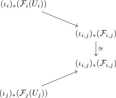

glueing of sheaves of topological spaces as limit
Proposition
Let $(X, \mathcal{T})$ be a topological space, $U_i$ an open cover and $\mathcal{C}$ a (sufficiently) complete. Suppose $\mathcal{F}_i: \mathrm{Op}(U_i)^{\mathrm{op}} \rightarrow \mathcal{C}$ are sheaves. Suppose that the restrictions
\begin{align*}
\mathcal{F}_{i,j}: \mathrm{Op}(U_i \cap U_j) \rightarrow& \mathcal{C} \\
\mathcal{F}_{j,i}: \mathrm{Op}(U_j \cap U_i) \rightarrow& \mathcal{C}
\end{align*}
coincide (up to natural trans ???)
Then the glueing of sheaves is a limit
\begin{align*}
\mathrm{lim} (\iota_i)_*(\mathcal{F}_i)
\end{align*}
for the direct image sheaf functor
